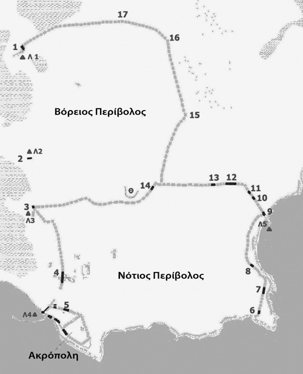

BRÈVE HISTOIRE D’ABDÈRE
Une des villes les plus considérables de l’Egée du nord, Abdère, se trouve au littoral de la Thrace,
à un emplacement exceptionnel avec deux ports naturels. La ville a été fondée au milieu du 7ème siècle av.J.Ch.
par les colonisateurs de Clazomènes, ville grecque à la péninsule d’Erythrée en Asie Mineure et le fondateur Timèsios.
Le parcours de la colonie était en déclin, non seulement à cause des conflits avec les thraciens, qui y préexistaient,
mais aussi en raison de mauvaises conditions climatiques au delta du fleuve Nestos, qui alors coulait plus près à Abdère
(aujourd’hui il y a un nouveau lit). Il est remarquable que la plupart des tombes de cette période sont des tombes des nourrissons,
ce qui conclut que les premiers colonisateurs couraient le risque du paludisme, prouvé par l’étude du matériel squelettique.

A peu près un siècle plus tard, en 545 av.J.Ch., la région a été colonisée par les habitants de Téos, ville grecque aussi,
située tout près de Clazomènes. Les Téiens se sont installés à la même région et ont cohabité avec les Clazoméniens en mettant
en évidence leur fondateur mythique Hercule et leur héros éponyme Abderos, qui selon le mythe, a été dévoré par les chevaux du roi
des Bistons de Thrace, Diomède. Les Téiens, eux aussi, faisaient face aux problèmes avec les Thraces mais finalement ils y ont dominé
et la ville a connu un grand épanouissement économique et intellectuel. Plusieurs grands hommes étaient nés ou ont vécu à Abdère.
Entre autres le fameux poète Anacréon, le sophiste Protagoras et le grand philosophe Démocrite, le père de la théorie atomique.

Après les guerres médiques Abdère a été incorporé à la 1ère Ligue athénienne payant un impôt bien considérable, et en même temps
la ville tenait des relations étroites avec Odryssie, un royaume de Thrace, indépendant. En 376 av.J.Ch. la tribu thrace des Triballes
a envahi Abdère et en 350 av.J.Ch. a été emparé par le roi Philippe IIème de Macédoine. Ces événements, associés aux changements
que les alluvions de Nestos a causés, ont obligé les habitants d’Abdère de se déplacer plus au sud de la région.
La nouvelle agglomération a été bâtie sous un projet unitaire de construction, selon le plan de Hippodamos.
Il comportait des murailles fortes, une acropole, deux ports, un théâtre tandis que les maisons étaient arrangées à carrés pâtés.
Pendant la période romaine Abdère était une ville libre mais dépendante de Rome, cependant cette ville puissante, que jadis était
peuplée de 22000 habitants à peu près, a commencé petit à petit à tomber en décadence, non seulement à cause des conditions politiques
mais parce que les alluvions du fleuve Nestos ont bouché ses ports, sa puissance pendant des siècles.
A la première moitié du 4ème siècle ap.J.Ch. la colonisation déjà affaiblie, a été déplacée sur la colline de l’acropole ancienne
et réapparaît sous le nom Polystylon et une partie de la ville abandonnée a été utilisée comme cimetière.
La région était habitée jusqu’au 14ème siècle ap.J.Ch.

L’agriculture, l’élevage, la pêche, l’artisanat et surtout le commerce très développé constituaient les sources de la richesse publique et privée.
Ce qui est significatif de l’économie vigoureuse de la ville est son monnayage florissant, qui a commencé vers 530 av.J.Ch.
La cité-Etat d’Abdère était parfaitement organisée. Son régime politique était démocratique avec deux corps supérieurs :
le Demos et la Boulè. L’archonte supérieur et l’archonte éponyme était le prêtre d’Apollon ou le prytane.
Il y avait aussi les archontes exécutifs et financiers (les timouchoi, les nomophylakes, les argyrotamies).
Parmi les lois votées à plusieurs reprises, celles qui interdisaient l’enterrement des citoyens qui avaient gaspillé
la fortune paternelle aux voyages et celles qui visaient à la protection du régime par les complots, sont parmi les plus remarquables.
L’emblème de la cité était le griffon et son dieu protecteur était Apollon. On adorait aussi Dionysos, Aphrodite, Athéna, Hermès,
Artémis, Déméter, Cybèle, Hécate, Hercule et l’archonte éponyme Abderos et d’autres. Les sources littéraires se réfèrent à de grandes fêtes,
Dionysies, Thésmophories (à l’honneur de Déméter) et aux jeux sportifs pour honorer le héros Abderos. Les Dionysies comprenaient des jeux,
la réception des étrangers officiels, des pièces théâtrales et le couronnement en or des bienfaiteurs.